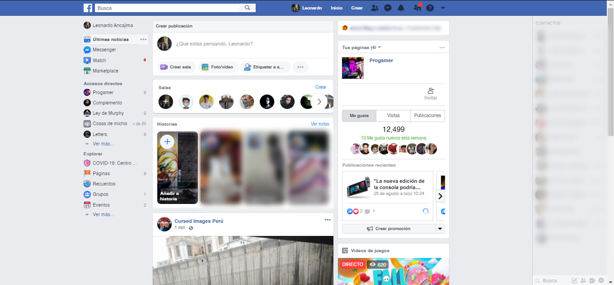

-Tecnologias utilizadas: PHP, Java, C++, Erlang, .NET, Scribe, Mysql, entre otras.
-Fecha de ejecución: 4 de Febrero, 2004.
Visita el proyecto aquí: Facebook

DISCORD
-Tecnologias utilizadas: JavaScript, Elixir, Rust, Python, C++, entre otras.
-Fecha de ejecución: 13 de Mayo, 2015.
Visita el proyecto aquí: Discord

-Tecnologias utilizadas: Python, Django, Tornado, MySQL, Git, entre otras.
-Fecha de ejecución: Marzo, 2010.
Visita el proyecto aquí: Pinterest